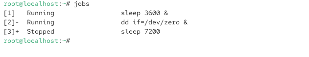
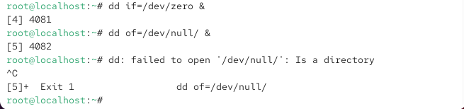
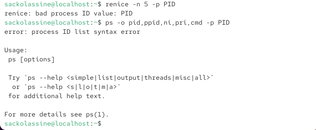
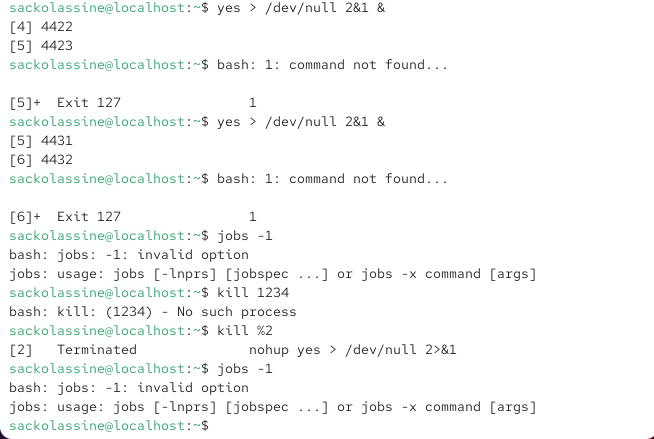
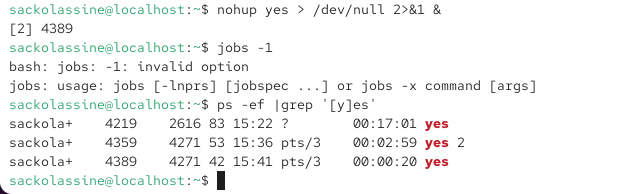

SACKO LASSINÉ
ps, jobs, fg,
bg, kill, nice,
renice и nohup.В ходе лабораторной работы изучены:
Основные команды:
jobs — просмотр заданий текущей оболочки.Ctrl+Z — приостановка foreground-задания.bg — продолжение задания в фоновом режиме.fg — возврат задания в foreground.Ctrl+C — прерывание текущего задания.
Команды для анализа процессов:
ps aux — просмотр списка процессов.top — интерактивный мониторинг процессов.ps fax — просмотр иерархии процессов.grep — поиск процессов по имени в выводе команды.
nice — запуск процесса с заданным значением nice.renice — изменение приоритета уже запущенного
процесса.Пример:
renice -n 5 -p PID

Для управления процессами применяются:
kill PID — отправка сигнала процессу.kill -9 PID — принудительное завершение процесса.killall имя — отправка сигнала процессам с указанным
именем.top — интерактивный просмотр и завершение
процессов.Перед завершением необходимо проверить PID и убедиться, что выбран нужный процесс.

& запускает команду в фоновом режиме.nohup позволяет процессу продолжить работу после
закрытия терминала в обычных условиях.kill позволяет отправлять сигналы отдельным
процессам.killall помогает завершить несколько процессов с
одинаковым именем.
В ходе лабораторной работы выполнены практические задания по:
nohup.Практические действия зафиксированы на скриншотах.
Цель лабораторной работы достигнута.
Получены практические навыки управления процессами в Linux, работы с фоновыми заданиями, изменения приоритетов, отправки сигналов и анализа состояния системы.
Спасибо за внимание!